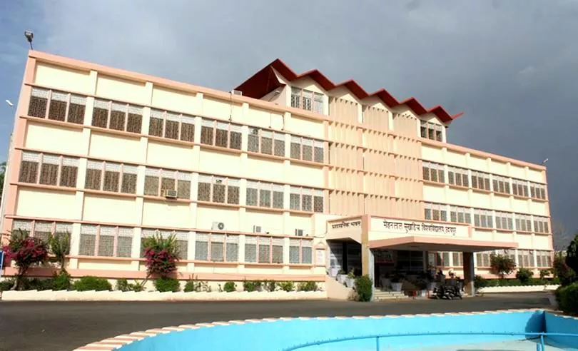
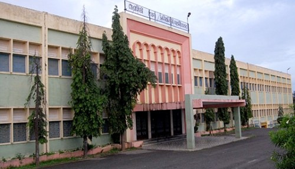
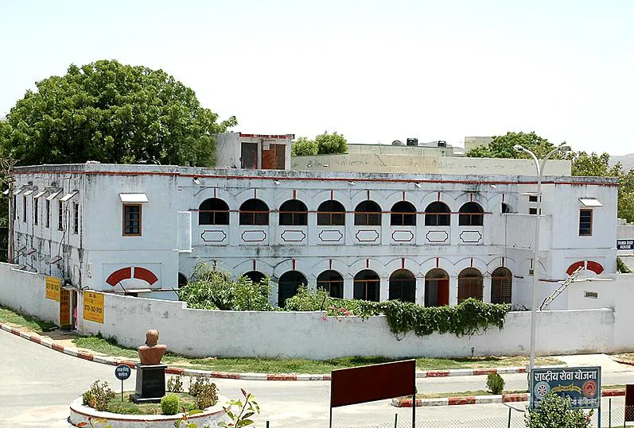
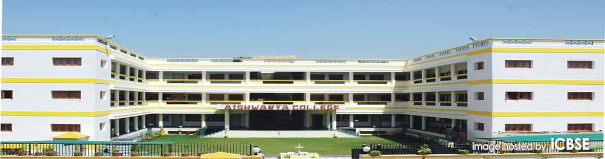
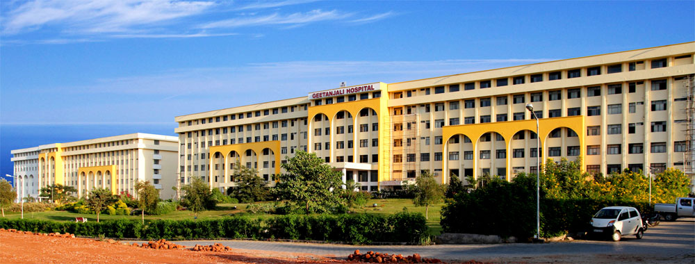
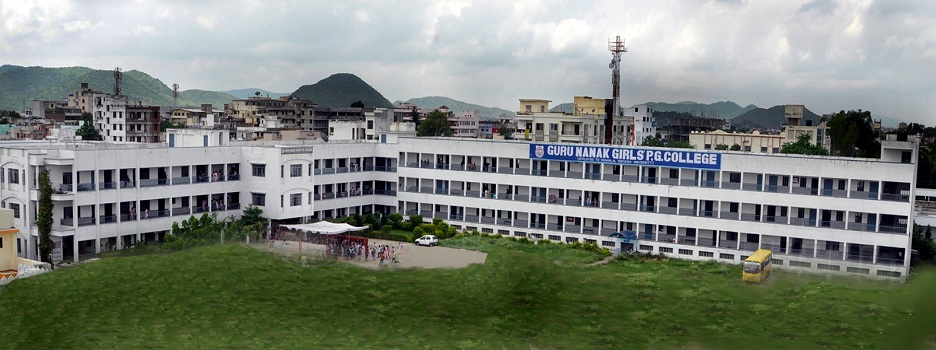
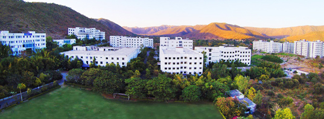

Popular College
Mohanlal Sukhadia University
Mohanlal Sukhadia University (erstwhile Udaipur University) at Udaipur is a State University established by an Act in the year 1962 to cater the needs of higher education in Southern Rajasthan with more then 2.25 Lakh Students. The University is located in Aravalli Hill Area largely dominated by tribal populations. Endowed with rich cultural heritage, natural resources and beautiful landscape, Udaipur is a world renowned tourist attraction. Ever since its inception university has been striving to maintain excellence in teaching, research and community service. Great emphasis has been laid in creating scientific temper, maintaining high ethical values and in keeping pace with emerging areas of higher learning. University has ensured overall socio-economic growth of all the sections of society by encouraging greater access and inclusive approach making it most preferred institution for higher education, learning and research.
Website:-www.mlsu.ac.in
The College of Technology and Engineering (CTAE)

he College of Technology and Engineering, Udaipur (CTAE) is a constituent college of the Maharana Pratap University of Agriculture and Technology, Udaipur. The college was started in 1964 with a Graduate Programme in Agricultural Engineering. Presently the CTAE has undergraduate degree programmes in 8 branches, M.Tech. programmes in 12 disciplines, besides an MBA programme in Engineering and PhD programmes in 9 disciplines. The college has been recognized as Outstanding Engineering College in Northern Region and has been awarded “Outstanding Institution Award” in 2013 by National Institute of Technical Teachers Training and Research, Chandigarh (a Ministry of Human Resource and Development, Government of India, Institute). A project funded by Ministry of Human Resources Development through World Bank on “Technical Education Quality Improvement Project (TEQIP-II)” worth INR 10.0 crore.
Website:-www.ctae.ac.in
Sir Padampat Singhania University
It is nearly half a century now that Late Sir Padampat Singhania, the visionary founder of the J K Organization dreamt of an empowered India populace, through whom India would take its place as an equal in the comity of nations. According to him, empowerment pre-supposes education and knowledge. That then became the cornerstone of the Organization’s philosophy for discharging its social responsibility and the J K Cement Nimbahera Foundation (JKCNF) was born. Over time, the involvement with education became stronger and deeper. Today, two decades later, it is associated with twelve educational institutions imparting education to nearly 14000 students at various levels of the learning curve. The J K Cement Nimbahera Foundation envisioned the establishment of a world class University in Rajasthan benchmarked to international educational institutions.The Foundation constituted a think tank of eminent persons from the Industry, Science & Technology.
Website:-www.spsu.ac.in
Bhupal Nobles College

The Bhupal Nobles' University has been constituted as per the approval of the Rajasthan Legislative Assembly under the University Act no. 23 of 2015. This University is sponsored by Vidya Pracharini Sabha which was established in 1923 and is one of the oldest credible educational societies in the country. It saw the light of dawn on nd 02 January, 1923 with two pupils and a primary school teacher. Ever since then, it has never looked back. In 1923, it was by the blessings of its Prime Deity Eklingnath and under the patronage of the prince, and later, the 75th Maharana of Mewar, the first Rajpramukh of the Republic of India, Shri Bhupal Singhji that the two devotees of education and learning, Mamaji Maharaj Aman Singhji of Ralawta and Rao Bahadur Thakur Raj Singhji of Bedla, on the advice of Pandit Dhram Narayanji, initiated this institution as a Primary School (Court of Wards' School). In 1929, this school was upgraded to Bhupal Nobles' High School.
Website:-www.bnuniversity.ac.in
Aishwarya College of Education Sansthan
Aishwarya College of Education Sansthan established under the act 1958 (Govt. of India) in the field of education as private self financed body with more than two decades of experience. It offers quality education through its five Institutions in Udaipur Aishwarya Post Graduate College, Aishwarya Institute of Management & IT, Aishwarya Teachers’ Training College, Aishwarya Primary Teachers Training School and Aishwarya Public School having affiliation/approved by the bodies like Mohanlal Sudhkadia University (MLSU), Government of Rajasthan, National Council of Teachers Education (NCTE), Rajasthan Technical University (RTU), All India Council of Technical Education (AICTE) and recently received accreditation of grade “B’ on set quality parameters from National Assessment and Accreditation Council (NAAC). Campus is situated in the heart of the city at Adarsh Nagar, University Road, Udaipur, well-connected for easy commuting.
Website:-www.aishwaryacollege.ac.in
Geetanjali Institute of Technical Studies
GITS have created a niche in the world of technical and management innovation. Our standard progression of delivering concepts of management, technical skills and computer application is a benchmark in the education industry. Not only we deliver, we are also trouble-shooters when it comes to support a talent. We do not judge our height by meters because we have never stop growing, the fineness of our work always increased. We are neither behind the time nor ahead we are just stay to be honest, we are masters in understanding “The Order of the Day”. Geetanjali Institute of Technical Studies , popularly known as GITS was established by Geetanjali Education Society in the year 2002-03. The institute is recognized by AICTE and Govt of Rajasthan and is affiliated to Rajasthan Technical University, Kota to provide technical and professional education to the youth in general and also the tribal people of the region in particular.
Website:-www.gits.ac.in
Guru Nanak Girls College
Guru Nanak Girls’ P.G. College was established in 1997 with a mission and vision for empowerment of women through education particularly catering to educational needs if underprivileged and socially and economically backward girls of the region. It is a self-financed college owned & managed by Guru Nanak Public School Sabha, affiliated to Mohan Lal Sukhadiya University, Udaipur . It has completed 15 years of glorious service in the field of women education.The college is named after Guru Nanak Dev Ji a great saint of Sikh community. This session all time high record admissions were made in various programs touching the figure 2235 which reflects remarkably significant a great progress & growth and also popularity of the institution among new admission seekers as a premier institution of higher education in the state. The institution proposes to start M.C.A. & B.Ed. program in coming session for which action has already been initiated.
Website:-www.gurunanakgirlscollege.com
Pacific University
Established in 1997, the Pacific University has made a mark on the educational map of India. Over the last 19 years, the Pacific Society has continued to make rapid strides in the field of higher & technical education. It has established more than twenty one institutes and become a multi-disciplinary conglomeration of colleges providing higher education in the diverse fields of Engineering, Management, Dentistry, Pharmacy, Computer Application, Hotel Management, Fire & Safety Management, Polytechnic Diploma, Mass Communication, Fashion Technology, Education, Arts, Law, Commerce, Agriculture, Yoga, Dairy & Food Technology, Basic & Applied Sciences, M.Phil. and Research Programmes (Ph.D.) in all relevant disciplines. Pacific University has a mammoth ultra modern campus sprawling over more than 100 acres of lush greenery, including state of the art classrooms, separate hostels for boys and girls, laboratories, and libraries.